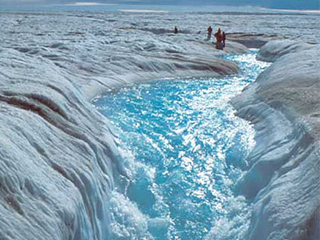
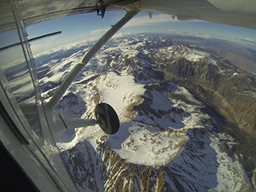
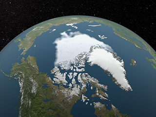
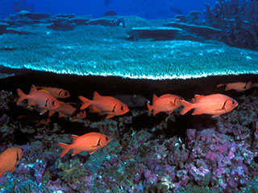

Menu
Climate Change: How Do We Know?
The Earth's climate has changed throughout history. Just in the last 650,000 years there have been seven cycles of glacial advance and retreat, with the abrupt end of the last ice age about 7,000 years ago marking the beginning of the modern climate era — and of human civilization. Most of these climate changes are attributed to very small variations in Earth’s orbit that change the amount of solar energy our planet receives.
Scientific evidence for warming of the climate system is unequivocal. (Intergovernmental Panel on Climate Change)
The computed background color for the test div is:
The current warming trend is of particular significance because most of it is extremely likely (greater than 95 percent probability) to be the result of human activity since the mid-20th century and proceeding at a rate that is unprecedented over decades to millennia.1
Earth-orbiting satellites and other technological advances have enabled scientists to see the big picture, collecting many different types of information about our planet and its climate on a global scale. This body of data, collected over many years, reveals the signals of a changing climate.
The heat-trapping nature of carbon dioxide and other gases was demonstrated in the mid-19th century.2 Their ability to affect the transfer of infrared energy through the atmosphere is the scientific basis of many instruments flown by NASA. There is no question that increased levels of greenhouse gases must cause the Earth to warm in response.
Ice cores drawn from Greenland, Antarctica, and tropical mountain glaciers show that the Earth’s climate responds to changes in greenhouse gas levels. Ancient evidence can also be found in tree rings, ocean sediments, coral reefs, and layers of sedimentary rocks. This ancient, or paleoclimate, evidence reveals that current warming is occurring roughly ten times faster than the average rate of ice-age-recovery warming.
The evidence for rapid climate change is compelling:
Global Temperature Rise
The planet's average surface temperature has risen about 1.62 degrees Fahrenheit (0.9 degrees Celsius) since the late 19th century, a change driven largely by increased carbon dioxide and other human-made emissions into the atmosphere.

The oceans have absorbed much of this increased heat, with the top 700 meters (about 2,300 feet) of ocean showing warming of more than 0.4 degrees Fahrenheit since 1969.

The Greenland and Antarctic ice sheets have decreased in mass. Data from NASA's Gravity Recovery and Climate Experiment show Greenland lost an average of 286 billion tons of ice per year between 1993 and 2016, while Antarctica lost about 127 billion tons of ice per year during the same time period. The rate of Antarctica ice mass loss has tripled in the last decade.7
Image: Flowing meltwater from the Greenland ice sheet

Glaciers are retreating almost everywhere around the world — including in the Alps, Himalayas, Andes, Rockies, Alaska and Africa.8
Image: The disappearing snowcap of Mount Kilimanjaro, from space.

Satellite observations reveal that the amount of spring snow cover in the Northern Hemisphere has decreased over the past five decades and that the snow is melting earlier.9

Global sea level rose about 8 inches in the last century. The rate in the last two decades, however, is nearly double that of the last century and is accelerating slightly every year.10
Image: Republic of Maldives: Vulnerable to sea level rise

Both the extent and thickness of Arctic sea ice has declined rapidly over the last several decades.11
Image: Visualization of the 2012 Arctic sea ice minimum, the lowest on record
The number of record high temperature events in the United States has been increasing, while the number of record low temperature events has been decreasing, since 1950. The U.S. has also witnessed increasing numbers of intense rainfall events

Since the beginning of the Industrial Revolution, the acidity of surface ocean waters has increased by about 30 percent.13,14 This increase is the result of humans emitting more carbon dioxide into the atmosphere and hence more being absorbed into the oceans. The amount of carbon dioxide absorbed by the upper layer of the oceans is increasing by about 2 billion tons per year.
 This graph, based on the comparison of atmospheric samples contained in ice cores and more recent direct measurements, provides evidence that atmospheric CO2 has increased since the Industrial Revolution. (Credit: Luthi, D., et al.. 2008; Etheridge, D.M., et al. 2010; Vostok ice core data/J.R. Petit et al.; NOAA Mauna Loa CO2 record.)
This graph, based on the comparison of atmospheric samples contained in ice cores and more recent direct measurements, provides evidence that atmospheric CO2 has increased since the Industrial Revolution. (Credit: Luthi, D., et al.. 2008; Etheridge, D.M., et al. 2010; Vostok ice core data/J.R. Petit et al.; NOAA Mauna Loa CO2 record.)